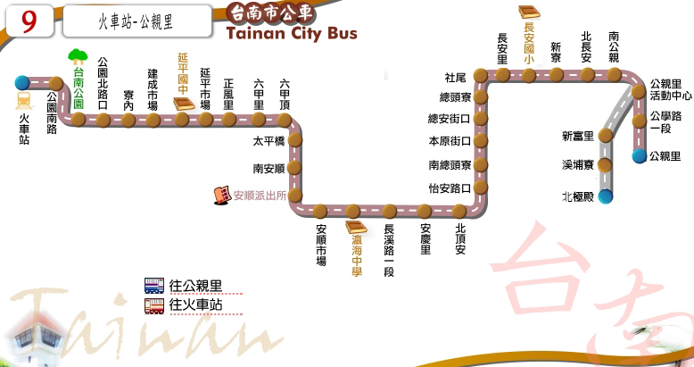

Tainan Bus for FUN
路線圖
路線資訊
票價表
時刻表
轉乘資訊
大台南公車 ─ 9路 路線圖
Tainan City Bus No.9, Route Map

台南市公車 ─ 9路 路線資訊
Tainan City Bus No.9, Route Information
起訖點
火車站 － 公親里/溪埔寮
營運公司
府城客運
首／末班車發車時刻
班距
固定班次
收費方式
一段票
公車動態資訊
票價表
Ticket Fare
全路線一段票
全票
半票
投現
18
9
電子票證
18
9
時刻表
Bus schedule
台南市公車 － 9路 主要轉乘點資訊
Tainan city bus NO.9, Transfer information
台南火車站
台鐵台南站
88
、
99
0左/右
、
1
、
2
、
3
、
5
、
6
、
7
、
9
、
10
、
11
、
14
、
18
、
21
綠幹線
藍幹線
紅幹線
、
紅1
、
紅2
、
紅3
、
紅4
橘3
、
橘11
、
橘12